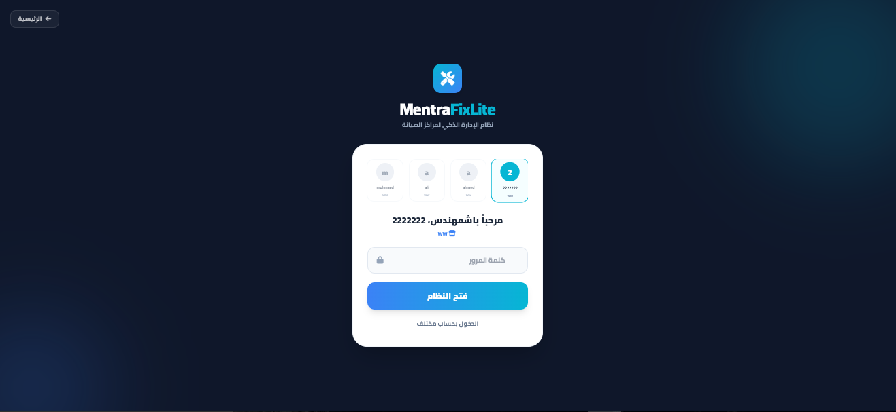
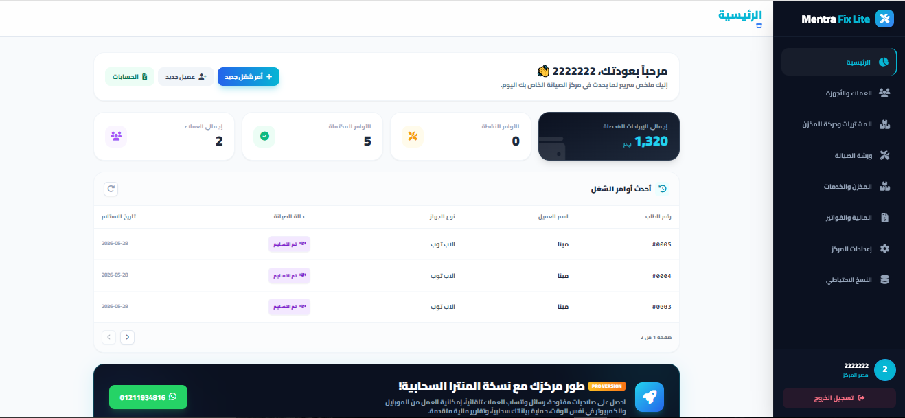
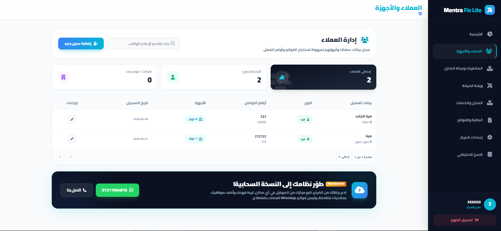
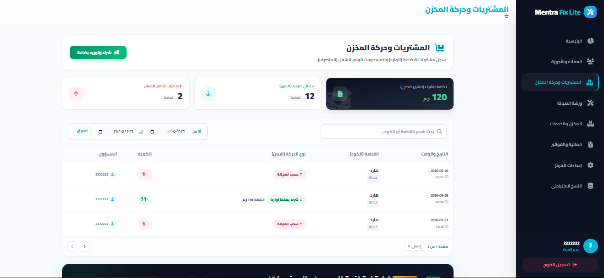
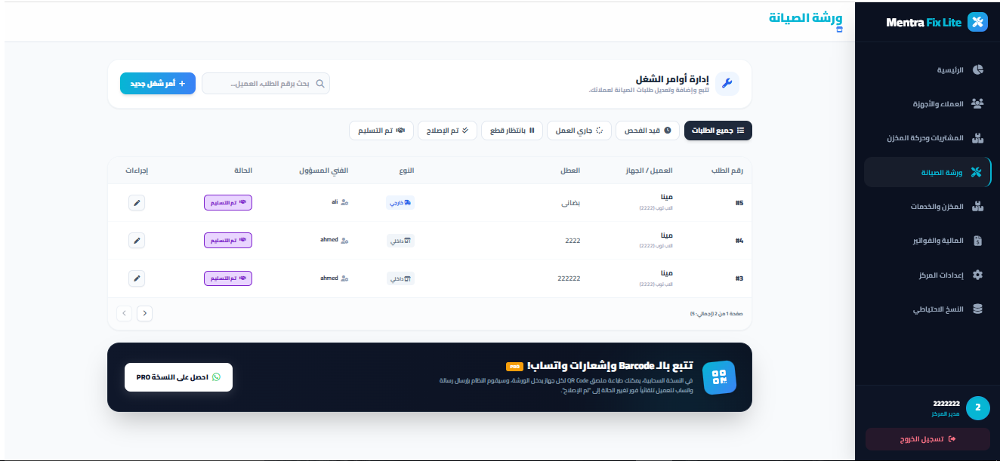
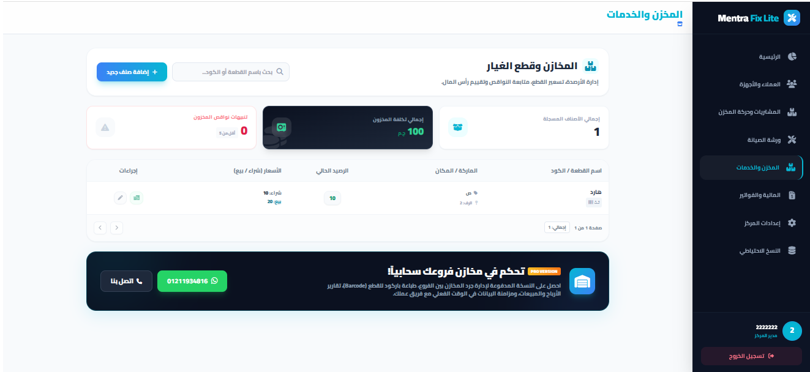
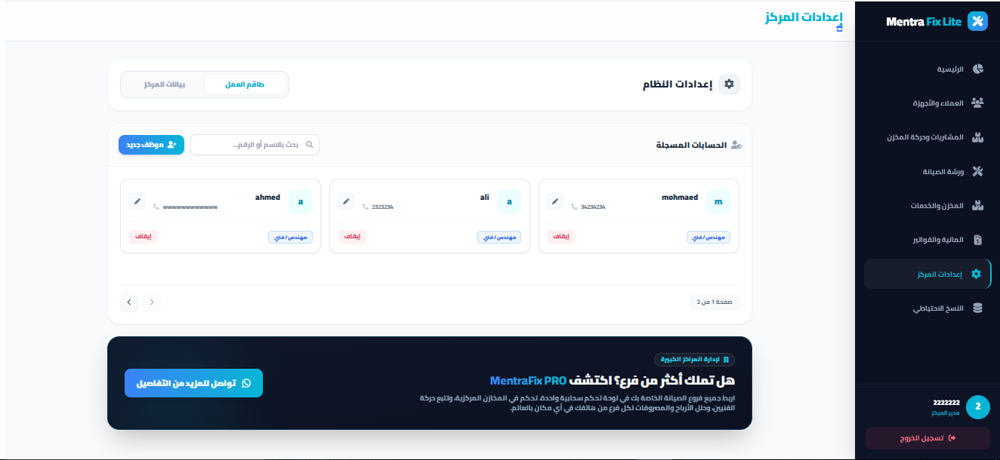
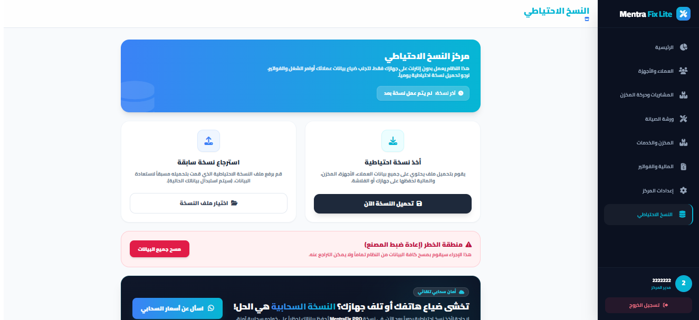

هذا الدليل سيأخذك في جولة سريعة ومصورة لشرح جميع شاشات ووظائف نظام MentraFix Lite لتبدأ العمل فوراً بدون أي تعقيدات.
من خلال هذه الشاشة يمكنك "تأسيس مركز جديد" بإنشاء قاعدة بياناتك الخاصة لأول مرة، وإدخال اسم المركز ومديره وكلمة المرور.
وبعد التأسيس، ستتمكن دائماً من الدخول السريع للنظام بضغطة واحدة وكتابة الباسورد فقط.

بمجرد الدخول، ستستقبلك لوحة التحكم الرئيسية. وهي تمنحك نظرة طائر سريعة على حالة المركز اليوم.

من هنا تبدأ دورة العمل. قم بتسجيل بيانات عملائك وأرقام هواتفهم. كما يمكنك من نفس الشاشة إضافة الأجهزة المرتبطة بكل عميل (نوع الجهاز، الماركة، السيريال نمبر).

قبل البدء بالصيانة، يجب أن يكون لديك قطع غيار! من هذه الشاشة يمكنك تسجيل فواتير شرائك من الموردين، وإدخال البضاعة الجديدة للمخزن، مع تحديد أسعار الشراء والبيع لتلك القطع.

هذا هو قلب النظام النابض. هنا تقوم باستلام الأجهزة المعطلة وفتح "تيكت صيانة" لها مع كتابة الشكوى.

هنا تستطيع الاطلاع على كافة قطع الغيار الموجودة في المركز وكمياتها الحالية، لتكتشف النواقص. كما يمكنك من خلال تبويب "دليل الخدمات" إضافة خدمات الصيانة الثابتة وتسعيرها (مثل: تنظيف، فورمات، لحام).

الجزء الخاص بالمحاسبة! استعرض جميع الفواتير الصادرة للعملاء، وقم بتحصيل المبالغ (كاش أو فيزا). كما تستطيع تسجيل المصروفات اليومية للمركز (إيجار، رواتب، كهرباء).

نظراً لأن نظام Lite يحفظ البيانات محلياً على جهازك (لحماية خصوصيتك وعدم استخدام إنترنت)، فإنه من الضروري الدخول لهذه الشاشة يومياً لاستخراج نسخة احتياطية من بياناتك والاحتفاظ بها، لتجنب ضياعها إذا تم مسح المتصفح أو تلف الويندوز.
